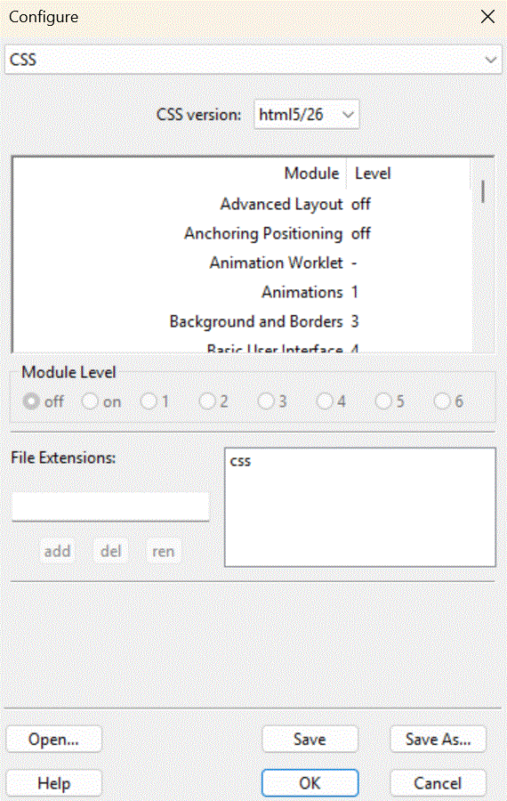

The css panel is part of the Configure Dialogue.

This panel controls CSS validation.
Unlike HTML, CSS is not defined by one huge standard, but by many small ones. Here, you can choose which versions of CSS to acknowledge.
Fortunately, W3 sometimes releases snapshots saying which versions of what parts of CSS are supported at that tim by the browsers; e.g. which parts of CSS are stable, and which are in a state of flux. This reflects what the browsers are capable of processing correctly and consistently. Each snapshot is named for the year in which it was defined.
The base CSS standards are regarded as extremely stable and correctly implemented, some are regarded as rather good (‘+’), some are seen to be well on their way (‘++’), and a few more are seen as worth a glance (‘+++’). Most, though, are not yet sufficiently well implemented to be properly used. Unfortunately, the terminology used in the various snapshots is inconsistent, which is why ssc uses it own, rather sarcastic, whovian terminology instead:
Below the snapshot selection is a full list of all CSS modules known to ssc. Many modules have more than one version, with higher numbered versions being the more recent, with more features, but less likely to be regarded as stable and correctly implemented in all browsers.
The actual module level is confusing, a confusion originating in the published standards. CSS was originally defined to have levels 1, various levels 2, and a couple of fresh at the time modules were added at level 3. It was explicitly stated with the introduction of level 3 modles that anything at levels one and two were fixed, part of those standards, and independent modules always start at level three. This did not happen. Many newer modules have been published by the same organisation, W3, at levels 1 and 2, despite clearly and obviously not being part of the original, standard, CSS Levels 1 and 2, which are still actively used. The result is a thorough mess. All I can suggest is picking up a copy of the various specifications and working out for yourself what is meant.
Many of those post CSS 2 level 3 and higher specifications were subsquently enhanced, giving level 4, etc., all the way up to, in one case, level 7. Selecting a specific version of a CSS modules in SSC selects all earlier versions of CSS that module, up to and including that selected version.
If you select css version bespoke, you can select in detail exactly which CSS modules and levels ssc should consider valid. Scroll through the list of modules to find the one you want to change. Select it, then select the appropriate level from the radio buttons beneath. Only valid levels are available.
Normally, CSS files have the extension .css. However, some sites are weird, and use something else. Here, you can take into account such bizarritudes.